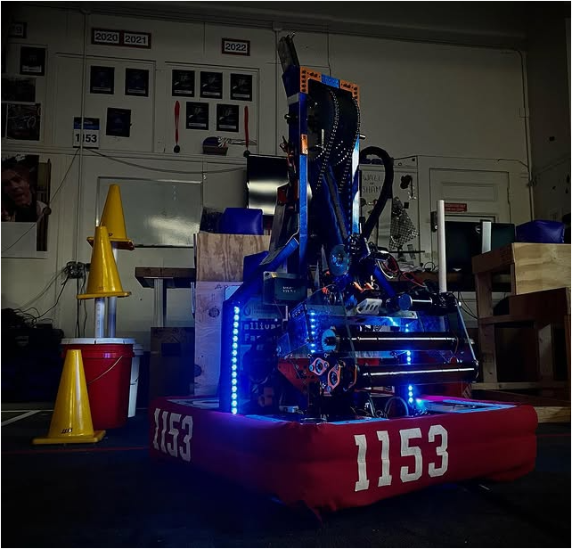

RAIJU
RAIJU
Raiju is our 2023 robot. It uses a swerve drive to move omnidirectionally as well as move while turning direction. The arm on the robot pivots up and down to reach the double substation and stow back inside the robot. The intake on the arm can pick up cones and cubes from the double substation, then score them on the low, mid, and high levels. The robot can balance on the charging station in autonomous and teleoperated time because of its gyro sensor that balances the robot automatically. The drivetrain is only 24x24 inches, so it leaves plenty of space for other robotics to balance.
Notable Achievements | |
|---|---|
| RIDE | Quality Award |
| North Shore | 3rd place |
